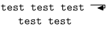
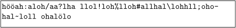

Contents
End of line marker in verbatim texts
from the wizard himself:
-
\startreusableMPgraphic{return} drawarrow (0,0)-- (1EmWidth,0)-- (1EmWidth,-.5ExHeight)-- (.5EmWidth,-.5ExHeight) ; \stopreusableMPgraphic \definesymbol[return][\reuseMPgraphic{return}] \setupcolors[state=start] \def\vcrlf{\symbol[return]\crlf\strut\kern1em\strut\ignorespaces} \setuptyping[TEX][escape=yes] \startTEX test test test /BTEX\vcrlf/ETEX test test \stopTEX
looks like this:
- 
Verbatim with line breaks
In ConTeXt
-
\enableregime[utf] % needed in MkII \setuppapersize[A5] \framed [width=8cm, align=flushleft, strut=no]{% no empty line at the beginning \starttyping[lines=hyphenated] hööah:aloh/aa?lha llol!loh%lloh#allhal\lohhll;ohohal~loll ohalölo \stoptyping }
- 
Breaking lines on the right border
Inspired by the (bad line breaking) example above, Taco wrote the following macro, which breaks a line as soon as it doesn't fit to the box any more.
The second box may serve as an example of what to do when you become desperate about your German grammar and hyphenation rules.
-
% BREAK is a special pretty handler that auto-wraps lines % to fit the current hsize. \gdef\BREAKsetspecials% {\dorecurse{256}{\setpretty\numexpr \recurselevel-1\relax=10 }} \gdef\BREAKsethandlers% {\installprettyhandler 10 \BREAKtypeone } \newcount\BREAKcharcounter \newcount\BREAKmaxcharcount \def\BREAKtypeone#1% {\advance\BREAKcharcounter 1 \ifnum\BREAKcharcounter > \BREAKmaxcharcount \hfil\break \BREAKcharcounter=1 \fi \getpretty{#1}} \def\BREAKsetcounters% {\setbox\scratchbox=\hbox{0}% \BREAKmaxcharcount=\hsize \divide\BREAKmaxcharcount \wd\scratchbox \def\flushrestofverbatimline{\BREAKcharcounter=0 }% \BREAKcharcounter=0 } \gdef\setupprettyBREAKtype% {\def\prettyidentifier{BREAK}% \BREAKsetcounters \BREAKsethandlers \BREAKsetspecials} \installprettytype [BREAK] [BREAK] \enableregime[utf] % needed in MkII \setuppapersize[A5] \starttext \framed [width=8cm, align=flushleft, strut=no]{% \setuptyping[option=BREAK] \starttyping hööah:aloh/aa?lha llol!loh%lloh#allhal\lohhll;ohohal~loll ohalölo \stoptyping } \framed [width=4cm, align=flushleft, strut=no]{% \setuptyping[option=BREAK] \starttyping Hottentottenstottertrottelmutterbeutelrattenlattengitterkastenattentäter \stoptyping } \stoptext
-

(The word "Hottentottenstottertrottelmutterlattengitterkotterbeutelratenattentater" has an amusing story attached, which can be found in the May 2003 issue of the Canberra Society of Editors Newsletter.
Another mechanism has been suggested on Wrapping.
See also
- Hyphenation
- \hyphenation to define the hyphenation of a specific word
- \startexceptions to define language-specific hyphenations
- \- to define an ad-hoc breakpoint
- \unhyphenated to prevent hyphenation
- \doublehyphendemerits to penalize hyphenation on consecutive lines
- \setupalign justification parameters to tweak the auto-hyphenation algorithm
- \definebreakpoints to initialize a breakpoint set
- \definebreakpoint to add to a breakpoint set
- \setbreakpoints to activate a breakpoint set
- \language to activate a language's settings, including hyphenation
- Wrapping